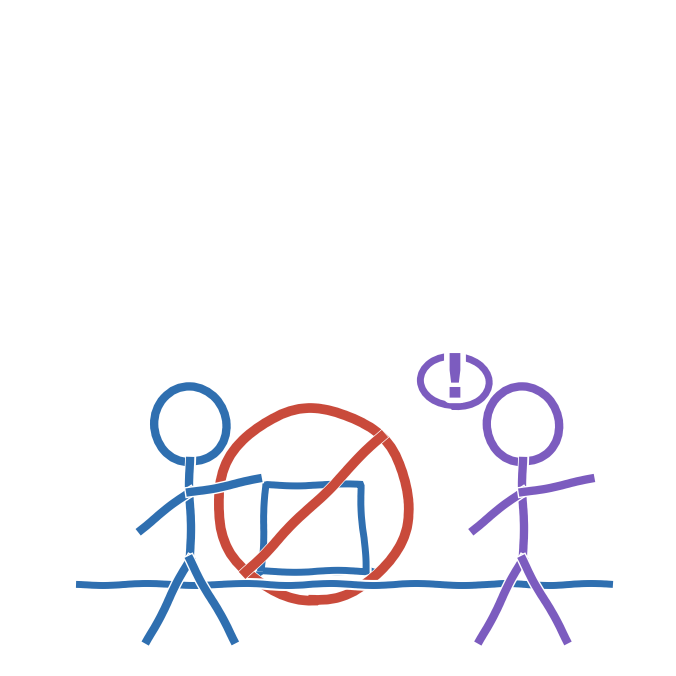

Ja. Hvis du afleverer en chatbots tekst, som var det din egen, er det snyd, præcis som at kopiere en kammerats besvarelse.
Ved folkeskolens skriftlige prøver, for eksempel dansk og matematik, er det slet ikke tilladt at bruge tekstgenererende AI. Bliver det opdaget, kan du blive bortvist fra prøven eller få den annulleret (Børne- og Undervisningsministeriet). Til mundtlige prøver, hvor du forbereder dig på forhånd, må du kun bruge AI i selve forberedelsen, hvis din skole har besluttet det. Du må aldrig bruge AI på selve prøvedagen.
HuskEr du i tvivl om, hvad der gælder for en konkret opgave, så spørg din lærer, før du går i gang.
Kilder
- Børne- og Undervisningsministeriet. Brug af digitale hjælpemidler og kunstig intelligens ved folkeskolens prøver. https://uvm.dk/folkeskolen/folkeskolens-proever/proeveafholdelse/brug-af-digitale-hjaelpemidler-og-kunstig-intelligens-ved-folkeskolens-proever